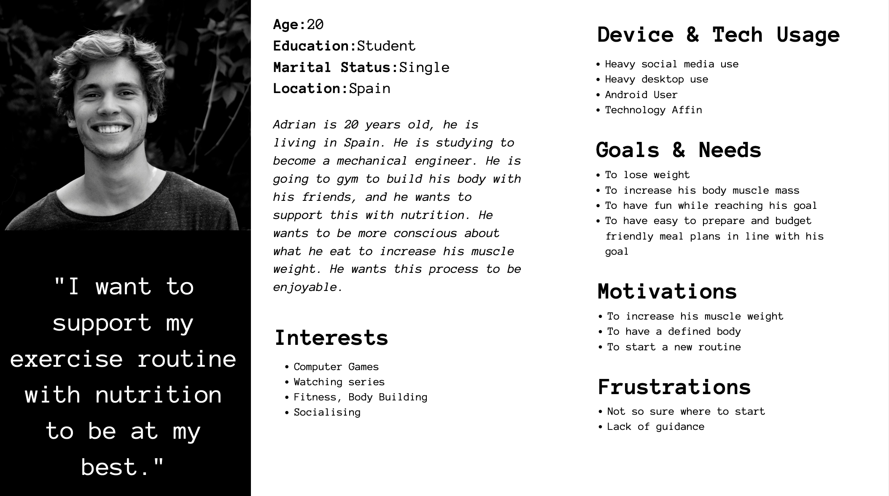
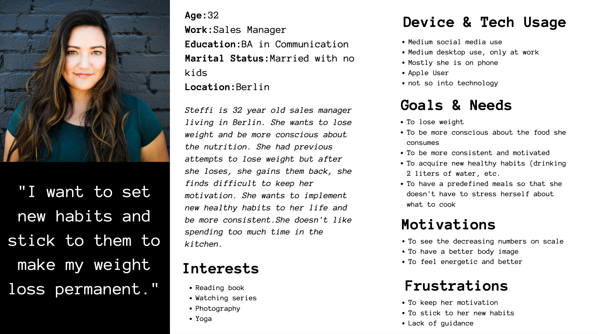
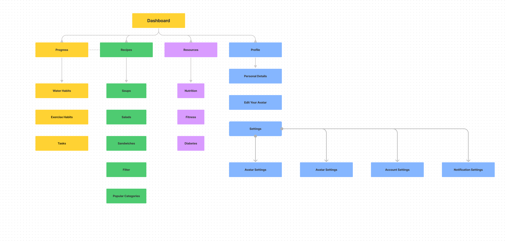
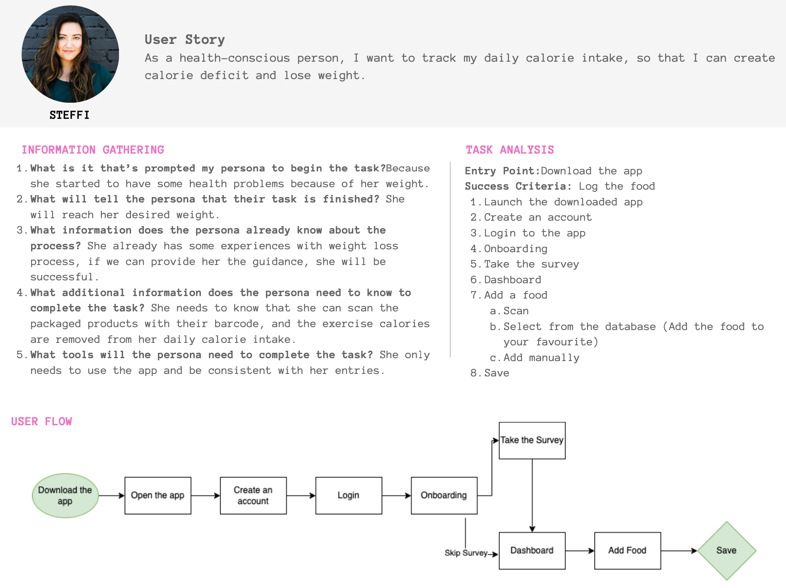
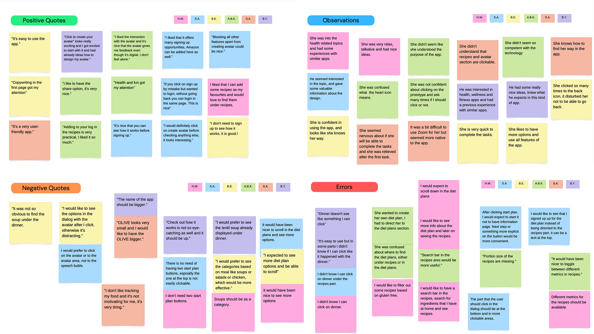
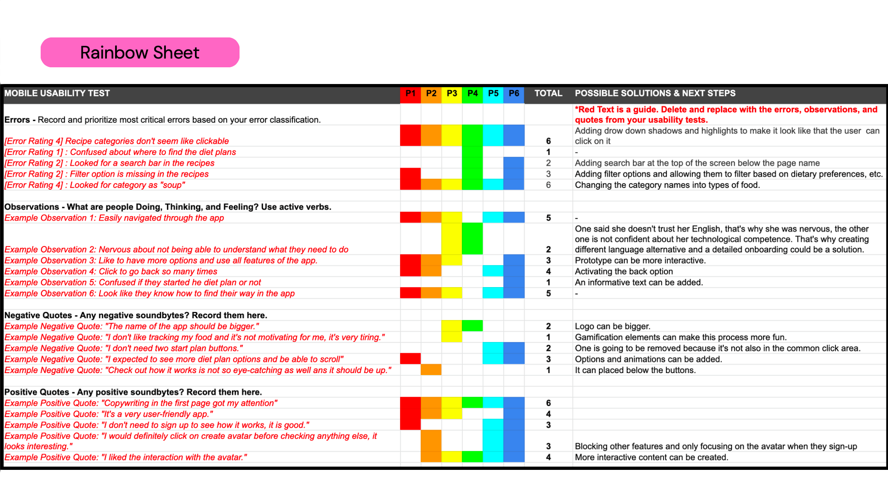

UX Case Study
Overview
An app that is designed to help you become the best version of yourself - While having fun!
CALO is a responsive web app that helps users to monitor their food, and select from a variety of recipes. With the integration of the avatar which is created by the users, the users don't feel alone through their health journey. The users can customize the avatar.
Problem
Users of weight loss and fitness apps often are not consistent with their entries and use of the apps after a while. They lack of the features to maintain their motivation. This is an issue because it leads to a decrease in app usage. Also, it could affect the reputation of the apps as "it's not working or effective". There’s an opportunity to keep the motivation of the users, and make them persistent with the use of the app, thus increase the time spent on the app and improve the reputation.
Goal
Create a responsive web app that has interactive elements and gamification features to make the users motivated and provide ease in their health journey.
UX Methods
UX methods that have been used in this project:
Competitive Analysis
To determine which of the competitors are doing a good job at solving users' problems and define the opportunities to meet unfulfilled users' needs, I conducted a competitive analysis. I focused on MyFittnessPal and Lifesum, as they have millions of users and leading apps in this category. I created a competitor profile for each of the competitors by focusing on their key objectives, overall strategy, and their market advantage as well as SWOT Analysis.
Apart from marketing analysis, I conducted UX Audit and focused on the key points:
- Usability
- Layout
- Navigation Structure
- Compatibility
- Differentiation
- Calls to Action
OUTCOME
- MyfittnessPal and Lifesum lack gamification elements.
- The apps do not have features to inform the users about food, exercise, and lifestyle.
- They both focus on the calorie deficit diet.
- The app design can be more interactive.
- Community part was missing in Lifesum, on the other hand, the users of MyFittnessPal were quite active on community part of the app.
User Stories
To refine my requirements to small and executable parts, I created user stories that explain the specific actions a certain type of user can take within the application.
{kind=link}
{kind=link}
User Research
To better understand the user behaviors towards health apps, discover their incentives for healthy living, to evaluate their current behaviors about games. I conducted a survey and collected 25 answers. I reached to the people via the community in my fitness club. Not only that, but I also reached out the people from my previous work, and social circle. I interviewed 4 people who had a desire to either lose weight or set some healthy habits and have a history with health apps.
During interviews, my focus was to
- collect data on their challenges with the existing health apps in the market,
- better understand the context in which users would use such apps,
- evaluate if the gamification elements would affect their motivation.
OUTCOME
Based on the answers,
- I concluded the customizable filtering options for meal plans like budget-friendly, less than 5 ingredients, 15 minutes cooking time, vegetarian-friendly etc. would add value to the users.
- Many of the users showed interest in the gamification elements and stated that it might increase awareness of how they treat their bodies.
- Many of the interviewees have brought up many times that they would like to have recipes based on their food selections. It could help them either with time-management or reaching their goals and reduce their stress about deciding what to cook.
- Every interviewee's intention to eat healthy is different, but they all need guidance and logical reasoning behind it to reach their goal and keep their motivation. They stated that motivation messages from bots could be a nice idea, and also their avatar can communicate with them and share some insights.
User Persona
To be able to establish empathy with the users and prioritize the functionality based on the audiences, I created user personas.
 {kind=link}
{kind=link}
Information Architecture - Card Sorting
To understand how the users expect the content to be organized and decide what to put on the homepage, I conducted closed card-sorting.
In closed card-sorting, the participants are asked to group website content into predefined categories.
{kind=link}
User Flow & Task Analysis
To be able to ensure that the users' needs have been satisfied at every point in the user flow, I concentrated on the user flows to make my designs more user-centered.
{kind=link}
Wireframing & Prototyping
With the low-fidelity wireframing, I planned the information hierarchy of a page, specifically how space should be allocated, where content will go, and what functionalities will be available. Moreover, I decided on the positioning of menu items, headers, and buttons.
{kind=link}
{kind=link}
{kind=link}
To create an interactive experience for testing before a design is finalized, I created an interactive and clickable prototype using Figma. As a base for my design decisions, I often applied for the Material Design by Google.
Usability Testing
To be able to discover the problems that the real user might encounter while using the app, to check its user-friendliness, I conducted usability testing with 5 people. It was a bit challenging to find people who can spare 30 minutes, and have access to their computer at the same time. However, through my connections, I was able to conduct the testing successfully. I conducted the moderated test with scenario tasks and a SUPR-Q questionnaire. By performing usability testing, I evaluated the ability or inability of users to complete specific tasks and I rated the errors based on Jacob Nielsen's error scale.
I interpreted the information from the usability tests via affinity mapping.
{kind=link}
I processed the information in the affinity mapping using the Rainbow Spreadsheet. Furthermore, I classified the important observations and errors and offered possible solutions. I updated my prototype based on the errors I identified as being the most critical.
{kind=link}
Issue 1
"- Search bar is missing in the recipes"
"+ Search bar is added"
Issue 2
"- Filter option is missing in the recipes"
"+ Filter icon is added"
UI Design
Based on the design principles that I studied in my program, I applied Gestalt theory in my design. In color psychology, the color meaning of purple is connected to power, nobility, wisdom, and transformation. The color turquoise is associated with meanings of refreshing, calming, and energy. That's why the purple color and the gradient color are the foundation colors of the app. The purple color is used for clickable options, on the other hand, the gradient shows the active states. To highlight the elements, such as cards and bottom sheets, the stroke color is used to emphasize and maintain the clean look of the app.
{kind=link}
{kind=link}
{kind=link}